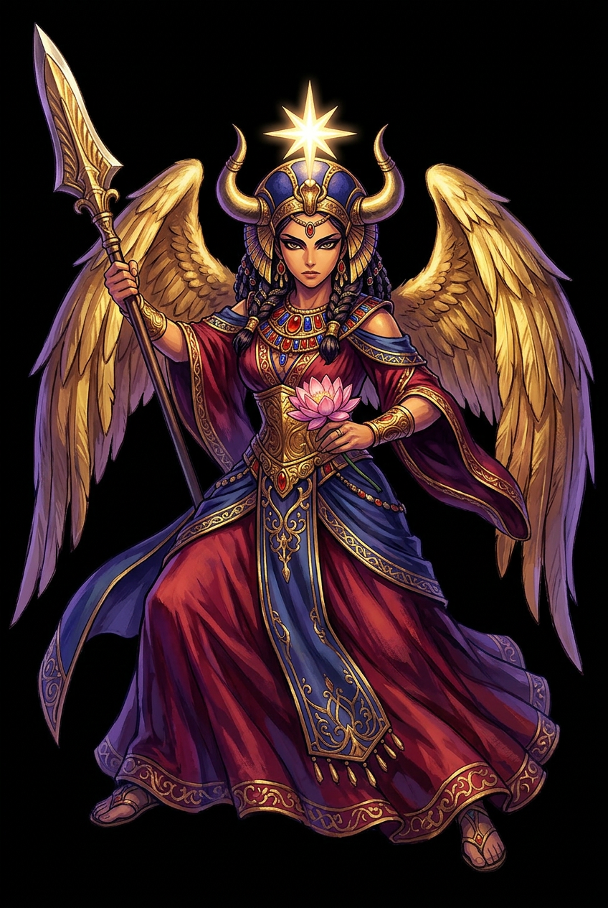

The Authentic Orthography
Love, War, Fertility, Venus · She of the womb. The planet Venus as deity. Queen of heaven.

Unicode restoration and ASCII comparison
𐤀𐤔𐤕𐤓𐤕
The name in its original Phoenician form. Aštart (𐤀𐤔𐤕𐤓𐤕) is attested in the source tradition — “She of the womb. The planet Venus as deity. Queen of heaven.”. Its original diacritics and script distinctions carry the full phonetic and orthographic weight of the source tradition.
astart
Reduced to plain astart, the name loses everything that made it specific: original diacritics and script distinctions. What remains is an ASCII string that machines can parse but that no longer speaks with its original voice.
Aštart
The Unicode restoration recovers what ASCII flattened. Aštart restores original diacritics and script distinctions, returning the name to its original written dignity. The domain encodes to Punycode, but the browser displays the truth.
Aštart.com → xn--atart-vdb.com
The non-ASCII characters in Aštart are encoded while the ASCII remains visible. To the DNS, it is Punycode. To humanity, it is Aštart.
How Aštart travels from ancient script to the modern URL
Phoenician ʿAštart is the Venus-goddess and queen of heaven; the name is related to Akkadian Ištar and South Arabian ʿAttar.
Love, War, Fertility, Venus
The Unicode restoration Aštart supplies registrable vowel diacritics; the Phoenician consonantal form is not registrable in .com.
How Aštart was spoken
Love, War, Fertility, and the Morning Star
Aštart is the Phoenician Venus — a goddess in whom love and war are not opposites but twin faces of the same radiant power. She is 'she of the womb,' the planet Venus as deity, and the Queen of Heaven invoked by women across the Levant. In Ugarit she stands just behind ꜥAnat in the warrior-huntress pair; in Phoenicia and Egypt she becomes one of the most widely traveled goddesses of antiquity.
The morning and evening star; her celestial body marks the boundaries between day and night, human and divine.
She governs sexual attraction, fertility, and the life-giving power of the womb; her cult emphasized renewal.
KTU 1.92 casts her as a huntress in the wilderness; in Egypt she rides chariots and battles enemies beside the king.
The title invoked by Jewish women in Egypt (Jeremiah 44) and by Phoenician devotees across the Mediterranean.
Stories of Aštart
Aštart's mythology is more dispersed than centralized. She appears in Ugaritic texts as a huntress and member of Ēl's household, but her full fame comes from Phoenician, Egyptian, and later Greco-Roman cult. She is the goddess who crosses borders as easily as the Phoenician ships that carried her.
KTU 1.92, 'Aštart the Huntress,' is the only Ugaritic literary text in which she is the protagonist. She goes into the outback, takes her weapons, fells game, and serves it to her father Ēl and the moon-god Yarikh. The text links her to the ritual hunt known from Emar and to the open country (šd, 'field').
In KTU 1.114, Aštart appears alongside ꜥAnat in Ēl's household, a scene of divine banquet and intoxication. The two goddesses are paired as active, even unruly, members of the high god's court — sisters in appetite and aggression.
Phoenician inscriptions from Sidon and elsewhere honor Aštart as a major civic goddess. At Sidon she is 'Aštart of the Field' or simply the great goddess; her temple was among the most famous in the Levant. The biblical ʿAštōreth becomes a byword for forbidden cult.
In Egypt, Aštart was adopted as a goddess of horses and chariot warfare, depicted with a naked body, Hathor wig, and aggressive stance. She protected the pharaoh in battle and was identified with the leonine Sakhmet. Her cult at Tanis and Memphis flourished in the New Kingdom.
Aštart refuses to be one thing. She is the morning star and the evening star, the womb and the battlefield, the naked goddess and the armored charioteer. Where later traditions split these powers among separate deities, she held them together, and her very multiplicity made her portable across cultures.
Enter Extended Lore